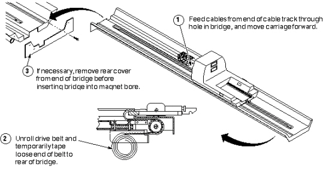
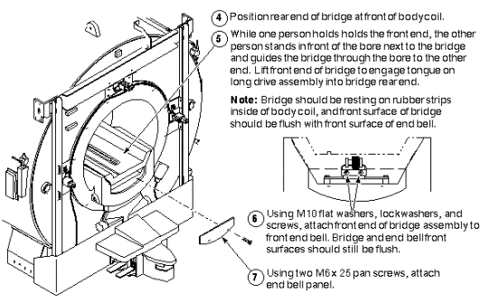
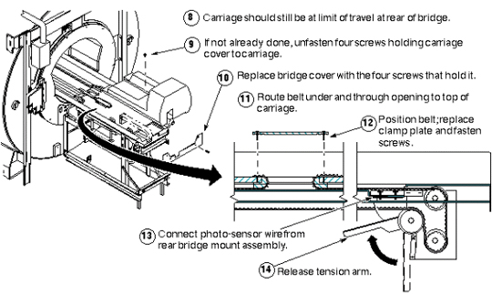
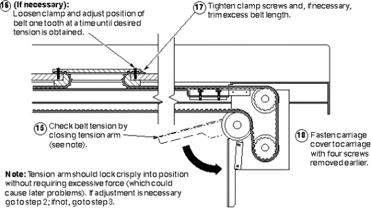

Operating Documentation
Direction 5440000, Rev# 5
Signa HDxt Service Methods
Module Version 1.0, Version Date 5/3/07
Operating Documentation |
| Required Persons | Preliminary Reqs | Procedure | Finalization |
|---|---|---|---|
| 4 minumum |
| Item | Qty | Effectivity | Part# | Manufacturer | |
|---|---|---|---|---|---|
| Non Magnetic Tool Kit | 1 | - | - | - | |
Reinstalling Bridge (steps 1-3)
Illustration 1: REINSTALLING BRIDGE (STEPS 1-3)

Reinstalling Bridge: steps 4-7
Illustration 2: REINSTALLING BRIDGE: STEPS 4–7

Reinstalling Bridge: steps 8–14
Illustration 3: REINSTALLING BRIDGE: STEPS 8–14

Reinstalling Bridge: steps 15–18
Illustration 4: REINSTALLING BRIDGE: STEPS 8–14

No finalization steps.